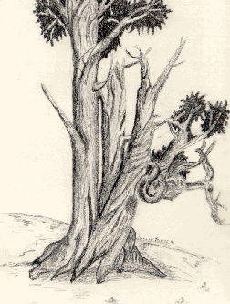

Student Project
Tanya

Bristle Cone Pine are one of nature's oldest living trees that brings a new out look on life. Just one look at its limbs, branches, and trunk you get caught up in its gnarled and twisted fate. How is it that such a tree can withstand the harsh environment and its elements at more than 8,000 feet? You can see the determination of its will to live. A new tree grows out of the dead to continue its life cycle. The awe and wonderment of its ability to do so. And you begin to wonder what the Bristle Cone Pine is doing in such a cold, windy palce. Why not join all other trees and thrive? Or did they do something right? After all, they survived this long.
-Tanya
c. Tanya
ALbert Lowry High School
Winnemucca, Nevada USA
Pencil on Paper 9 "X12"
Bristlecone Pine
Latin Name: Pinus Aristata
Age: 4,600 years
Circumference: TBA
Location: Great Basin National Park
Ely, Nevada
 Return to Main Page
Return to Main Page
June Julian jj68@nyu.edu